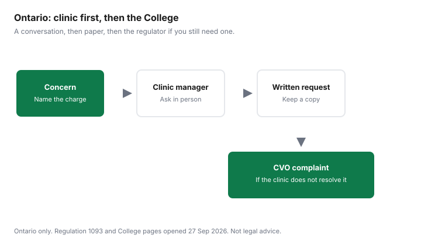

Pets · Canada
Your Rights at the Vet in Ontario: Estimates, Itemized Bills and Separate Drug Fees
This page is Ontario only. It is about what you can ask for before and after a visit: an estimate, an itemized account, a written prescription, a copy of the record, and a path to the College of Veterinarians of Ontario if the clinic will not answer. Ways to spend less on the care itself are the vet-bill guide. Filling the prescription somewhere else is the pharmacy walkthrough. Low-cost clinic fees that were printed on a charity page are the clinic guide. Nothing here is legal advice, veterinary advice, or a complaint against a named practice. Confirm the current text on the official pages linked in the sources.
Key takeaways
- The College’s informed-consent standard, revised October 2023, expects an estimated cost, using a range when appropriate, from a client over 18, and a note in the record that consent was obtained.
- Regulation 1093 lists failure to itemize, when you request an itemized account, as professional misconduct. Companion-animal records must separate drug charges from advice or other services.
- Section 26 requires a written prescription when you ask for one instead of clinic dispensing, unless you want a qualifying oral prescription. The College says a writing fee is allowed. No amount was printed.
- Records are kept at least five years after the last entry, or two years after the veterinarian stops practising, whichever comes first. An electronic file has to be printable. A copy fee is not in the sections cited.
- Complaints go to complaints@cvo.org or the phone numbers on the College’s investigations page. Talk to the clinic manager, in writing, first.
What Ontario's veterinary regulator expects: informed consent and estimates
The College’s Professional Practice Standard on Informed Client Consent was published in October 2014 and revised in October 2023. It says informed consent is a conversation, not a one-time form, and that consent may be implied or explicit, and explicit consent may be verbal or in writing.
A veterinarian meets the standard when they obtain consent from a client over 18, tie it to the proposed service, and give comprehensive information: the differential or definitive diagnosis, the nature of the proposed diagnostics or treatments, the benefits, common side effects and serious risks, reasonable alternatives, and the consequences of refusal. They answer questions. They provide an estimated cost, using a range when appropriate. They indicate in the medical record that consent was obtained and, for higher-risk diagnostics or treatments, obtain consent in writing where feasible.
The College’s guide to that standard says it is advisable to provide a range of total costs for a complex intervention, that written estimates help the client understand the financial implications, and that clients should be told the scope and the cost can expand based on what is found during the procedure. A range is not a cap. If the visit is leaving the range, the consent standard is a reason to pause and talk, not a coupon for the low number. Regulation 1093, section 18, is the regulation beside the standard. A member shall not provide veterinary services unless they have been retained, have advised that services will follow the standards of the profession, have agreed the scope with the client, and have obtained consent for each service. An emergency in which the animal needs immediate care is one of the exceptions in subsection 18(3). The e-Laws consolidation as of 27 Sep 2026 shows a currency date of 25 Aug 2026 and last amendment 260/22.
The College does not set a provincial price list. Charging a fee that is excessive in relation to the amount normally charged for the service or the product is item 11 of the misconduct list in section 17. “Excessive” is not a dollar in the regulation. A complaint is how that word gets examined. Ordinary disagreement with a posted exam fee is a conversation with the clinic. The insurance guide is a different question: what a policy might reimburse after you have already consented to the care.
Getting an itemized bill, and questioning a charge
Section 17 of Regulation 1093 makes it professional misconduct to fail to issue a statement or receipt when a client or the client’s agent requests one, and to fail to itemize the services provided, the fees, and the disbursements when an itemized account is requested. Companion-animal records, section 22(1), must include the fees and charges, showing separately those for drugs and those for advice or other services.
Drug entries in the record include the name, strength, dose, and quantity. Separate drug charges are a record rule. They are not a promise that the first receipt you are handed already looks like a pharmacy receipt. If it is one line, ask for the itemized account. Put the request in writing if the desk says the system cannot split it.
Question a charge by naming the line. “This dispensing fee” is a better question than “this bill is high.” Ask whether the line was on the estimate, whether it is a drug or a professional service, and whether a writing fee was added because you asked for a prescription. Interest on an account, and a discount for prompt payment, have their own misconduct items if the client was not told the terms before the service. A missed appointment can carry a fee only with the notice rule in the regulation: item 12 refers to an appointment missed without at least twenty-four hours’ notice. Read the clinic’s posted policy beside that sentence. Ways to lower the underlying cost, including a second clinic, stay on the vet-bill guide so this page does not become a shopping list.
Prescriptions vs dispensing: your right to a written prescription
Section 26(1) is the request rule. If the member has determined that a drug should be prescribed, and the client asks for a prescription instead of having that member dispense the drug, the member shall give the prescription, in writing, unless subsection 26(2) applies. The oral path is allowed when the client wants it, and only to another member, a pharmacist, or a veterinarian practising outside Ontario, chosen or approved by the client, with an extra condition if it goes to another member. The written prescription is signed and includes the drug name, strength, and quantity, the member’s name and address, the animal or group, the client’s name, the directions, the full date, withholding times if the animal is food-producing, the number of refills if any, the member’s name in legible form, and the licence number.
The College’s guide to prescribing a drug, as of 27 Sep 2026, says the same duty and says a veterinarian may choose to charge a fee for providing the written prescription. No amount was on that page. Ask what the fee is before you decide the pharmacy comparison is cheaper. The guide also says the patient is the animal and that not every pharmacy stocks every veterinary drug. The medication guide is the price comparison. This page stops at the right to the paper. Dispensing and prescribing are different acts. A veterinarian who both prescribes and sells the drug is in a dual role the College’s prescribing guide tells the profession to acknowledge. That sentence is not a finding about your clinic.
Requesting your pet's medical records and transferring clinics
Section 22(1) lists what a companion-animal record contains: identification including species, breed, colour, age, and sex; the client’s name, address, and telephone numbers; an emergency contact if you will be away while the animal is hospitalised; the date of each visit; the health history including vaccinations; the current weight; particulars of each assessment and the results; professional advice and to whom it was given; treatments and procedures, including drugs; surgical consent in writing or a note of why consent was oral or unavailable; copies of reports; a final assessment; and the fees, with drugs separate.
Section 22(5) says the records are kept at least five years after the last entry, or until two years after the member ceases to practise, whichever occurs first. They must be legible and systematic. Updates must be dated so the earlier content is preserved. An electronic system must be able to display the record, find it by name or other identifier, print it promptly, show it in chronological order, and keep an audit trail.
The regulation, in the sections cited, requires the record to exist and to be printable. It does not print a price for a copy, a number of days the clinic has to mail one, or a rule that the copy is free. Ask for a printout or an export, ask the fee, and ask that it be sent to the new clinic if you are moving. Bring the record to the next veterinarian. Treating an animal that is already under another member’s care has its own rules in section 17, including notifying the other member and getting the history as soon as practicable, with exceptions. You help that process by carrying the paper. If a clinic says the file cannot be printed, the electronic-system rule is the sentence to point to, calmly, in writing.
Raising a concern: talking to the clinic first, then the College of Veterinarians of Ontario
Start with the person who can fix a bill: the veterinarian or the clinic manager. Say what you asked for, the date, and what you received.
An estimate that was never given, a one-line invoice after you asked for an itemized account, or a refusal of a written prescription are different conversations from “I wish the surgery had cost less.” Keep a copy of the emails. The College’s investigations and hearings page, as of 27 Sep 2026, says anyone who believes a veterinarian has not acted professionally can submit a complaint. The contact on that page is complaints@cvo.org, or (519) 824-5600 or 1-800-424-2856, extension 2403, during business hours. Conduct issues are screened by the Executive Committee or the Complaints Committee. Outcomes the page lists include closed with no action, closed as frivolous and vexatious, advice, an agreement for remedial activity, or a referral to discipline. A mediated resolutions program is described as an alternative for disputes. The College investigates conduct against standards. It does not set your invoice to a number you prefer.
This guide does not describe proclamation dates from the Veterinary Professionals Act, 2024; check e-Laws. The rules above are Regulation 1093 and the College standards that did load. If a newer Act changes the complaint body later, the College’s site is the place to confirm it. Other provinces regulate veterinarians through their own colleges. Do not carry these section numbers across a provincial border.
Script and checklist
You can say this, and then stop talking: “I am asking for an estimated cost, as a range if the procedure may change. I am asking for an itemized account that separates drugs from professional services. If a drug is prescribed, I am asking for a written prescription under section 26, and I am asking what the writing fee is before you prepare it. I am asking for a printout of the medical record. Please reply in writing.” Then use the table.
| Situation | What to ask | Rule or source | Notes |
|---|---|---|---|
| Before a non-emergency procedure | Estimated cost, as a range if the scope can grow. Consent for each service. | CVO informed-consent standard, revised October 2023. Regulation 1093, s. 18. | A range is not a cap. An emergency can be an exception to s. 18(2). |
| The invoice is one line | An itemized account of services, fees, and disbursements, with drugs separate. | Regulation 1093, s. 17 items 16 and 17, and s. 22(1) item 12. | Ask in writing if the first reply is “the system cannot.” |
| You want the drug filled elsewhere | A signed written prescription, and the fee for writing it. | Regulation 1093, s. 26. CVO prescribing guide: a fee may be charged. No amount printed. | Oral prescriptions have extra conditions. See the pharmacy guide before you assume a counter will stock the drug. |
| You are changing clinics | A printout of the record. Ask the fee. | Regulation 1093, s. 22. Electronic systems must be able to print promptly. Retention is five years after the last entry, or two years after practice ends, whichever is first. | A copy fee was not in the cited text. Do not invent one. |
| The clinic will not answer | A written request to the manager, then a complaint if you still need the College. | CVO investigations page: complaints@cvo.org, (519) 824-5600 or 1-800-424-2856 ext. 2403. | The College examines conduct. It does not rewrite a posted fee into a different posted fee. |

Sources
- R.R.O. 1990, Regulation 1093 (Veterinarians Act), e-Laws consolidation as of 27 Sep 2026. Currency date 25 Aug 2026. Last amendment cited on that page: 260/22. Sections 17, 18, 22, and 26 as described. No copy-fee dollar and no prescription-fee dollar.
- College of Veterinarians of Ontario, Professional Practice Standard: Informed Client Consent, published October 2014, revised October 2023, and the guide to that standard, as of 27 Sep 2026. Estimate, range, written consent for higher risk where feasible.
- College of Veterinarians of Ontario, Guide to the Professional Practice Standard: Prescribing a Drug, as of 27 Sep 2026. Written prescription on request under section 26. A fee may be charged. No amount.
- College of Veterinarians of Ontario, Investigations and Hearings, as of 27 Sep 2026. Complaint contact and the outcome list as cited.
- Check the Veterinary Professionals Act, 2024, on e-Laws. No proclamation date is stated from that statute.
Frequently asked questions
Does my vet have to give me an estimate?
The College of Veterinarians of Ontario’s Professional Practice Standard on Informed Client Consent, revised October 2023, says a veterinarian meets the standard when they provide an estimated cost of the proposed diagnostics or treatments, using a range when appropriate. The College’s guide says a range is advisable for a complex intervention and that written estimates help the client understand the cost. Regulation 1093 also requires consent for each service and an agreement on the scope. This is an Ontario standard. Confirm the current text on cvo.org. It is not a promise that the final invoice will match the low end of the range.
Can I ask for an itemized bill?
Yes. Failing to itemize the services, the fees, and the disbursements when a client or the client’s agent requests an itemized account is listed as professional misconduct in Regulation 1093. Failing to issue a statement or receipt when one is requested is a separate item on that list. Companion-animal records must show fees and charges with drugs separate from advice or other services. Ask for the itemized account if the paper in your hand is one line.
Can I get a written prescription to fill elsewhere?
If the veterinarian has determined that a drug should be prescribed and you ask for a prescription instead of having that veterinarian dispense it, section 26 says they shall give it to you, in writing, unless you specifically want an oral prescription that meets the conditions in the regulation. The written prescription has to include the drug, strength, quantity, directions, date, refills if any, and the veterinarian’s name and licence number. The College’s prescribing guide says a veterinarian may charge a fee for writing it. No dollar amount was printed. The pharmacy walkthrough is the next step.
How do I get my pet’s records?
Regulation 1093 requires a companion-animal record with identification, history, treatments, and fees, kept at least five years after the last entry or until two years after the veterinarian stops practising, whichever comes first. An electronic system has to be capable of printing the record promptly. Ask the clinic for a copy or a printout and ask whether it charges a fee. A release fee was not printed in the sections as of 27 Sep 2026. If the clinic refuses, use the College’s complaint path after you have asked in writing.
How do I complain about a vet in Ontario?
Talk to the clinic first and keep notes. If you still want the regulator involved, the College’s investigations page, as of 27 Sep 2026, says anyone can submit a complaint. The contact printed there is complaints@cvo.org or (519) 824-5600 or 1-800-424-2856, extension 2403, during business hours. Outcomes the page lists include no action, advice, a remedial agreement, or a referral to discipline. The College does not set ordinary fee schedules. This page is not a complaint and it is not legal advice.
Researched and drafted with AI assistance and fact-checked against official Canadian sources. How we create content.